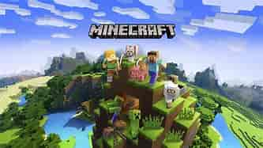
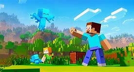
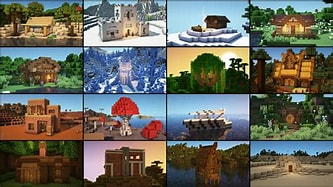
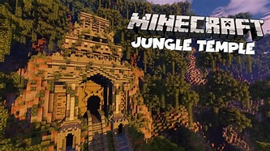

Connecting to the server...

From cavernous temples to floating sky islands, the best Minecraft adventure maps on the Marketplace pack in hidden secrets, redstone puzzles, and unforgettable boss battles while honoring the game’s survival roots.
These worlds are designed around exploration, offering players new biomes, lore-filled villages, and custom mobs that feel like a natural extension of the base game rather than a separate minigame.

A Spirit's Journey is a great place to start when looking for the best Minecraft marketplace worlds to get lost in, because it blends narration, parkour, and environmental storytelling into every chapter.
Along the way, players encounter ancient ruins, mysterious portals, and subtle references to Minecraft’s nether history, making the adventure feel like a rediscovery of the world’s hidden magics and forgotten civilizations.
Lazy DFU focuses on optimizing a very specific piece of Minecraft rendering, reducing unnecessary chunk updates so your world can stay responsive even when you are sprinting across a dense redwood forest or mining deep in the ravine.
When Minecraft worlds generate thousands of blocks, every optimization matters, and Lazy DFU helps keep farms, mob grinders, and multiplayer servers running with fewer hitches while preserving the familiar feel of walking through the overworld.

This two-for-one mod makes your Minecraft world look better and run smoother with a more efficient biome blending algorithm, so the transition from jungle to savanna feels natural instead of clashing.
Biome blending is what makes exploration feel immersive, and with smarter transitions, the game can keep its signature blocky style while letting rivers, mountains, and rare biomes flow together more realistically.
Now, you should be able to spread your biome transition radius out to as far as 29x29 blocks without incurring a significant performance penalty, which makes searching for the rarest Minecraft biomes much more rewarding.
From the sparkling ice spikes of the frozen peaks to the crimson forests of the Nether, the rarest biomes are the places where builders and explorers discover the game’s most unusual resources and secrets.
Whether you want a survival base in the mushroom fields or a treasure hunt in a deep dark biome, understanding these rare biome types helps you plan your journey across the Overworld, Nether, and End.

It should be evident to anyone who has played Minecraft before that there is a lot of history to the land of Minecraft before Steve shows up, hidden in ocean monuments, desert temples, and woodland mansions.
The very existence of these superstructures tells us that there was an advanced race of builders that existed at one point, and every ancient ruin you find adds another piece to the story of how the Endermen, Illagers, and villagers shaped the world.
Exploring these sites with torches and enchanted gear rewards you with rare loot, strongholds, and the feeling that Minecraft’s world is much older than the current player’s journey.